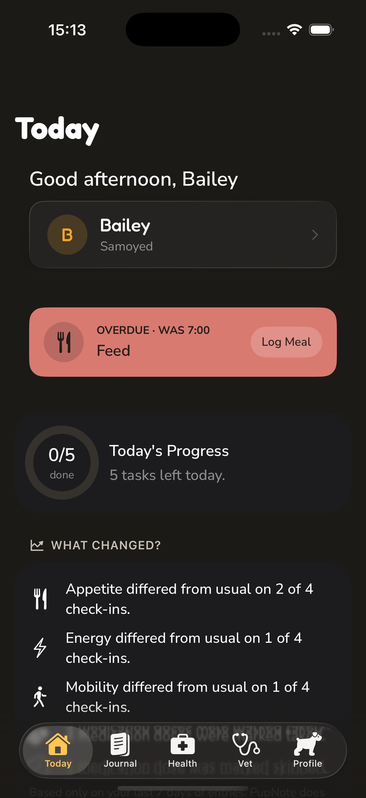
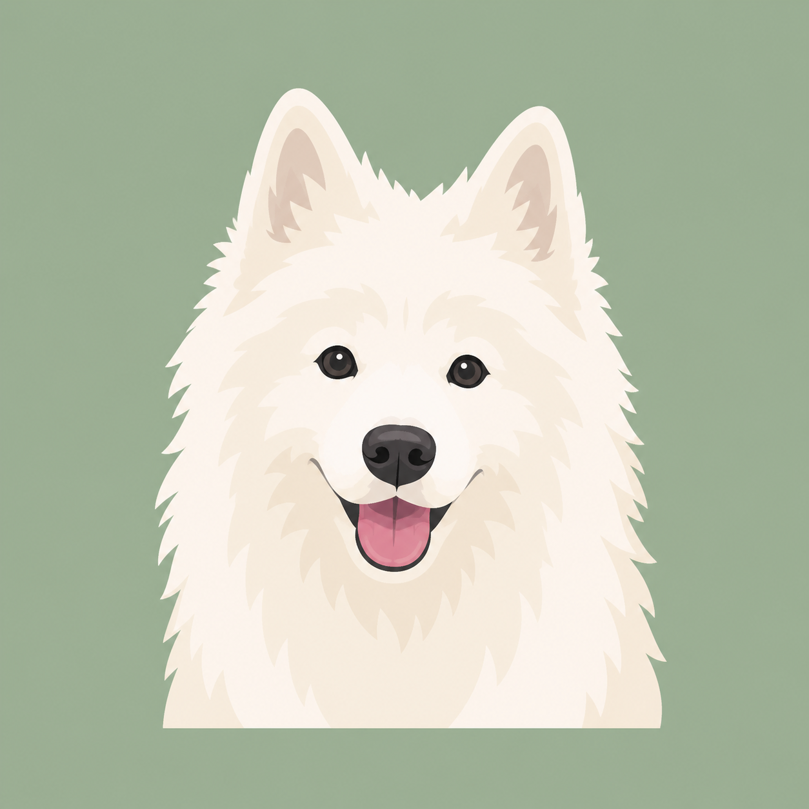

Stay on top of today
See the next meal or medication, then record walks, meals and observations in a few taps.
Dog health journal
Record everyday changes, build a meaningful health timeline, and prepare a clear summary for your veterinarian.

Why PupNote
Dogs may receive care from different veterinarians, clinics and animal hospitals throughout their lives. Each visit can begin with the same difficult questions: What changed? When did it start? How often has it happened? Which medications were given?
Changes in appetite, energy, mobility, sleep, digestion or behaviour can be difficult to remember accurately during an appointment. PupNote keeps those everyday observations, routines, medications, symptoms, weight and health history together in one owner-held journal.
Before a visit, choose relevant information and create an organized summary. PupNote helps you remember the details and communicate them clearly, even when the care provider changes.
One calm record
Capture useful details now and keep them ready whenever you need to look back.
See the next meal or medication, then record walks, meals and observations in a few taps.
Keep weight, routines, medications and wellbeing checks together in chronological order.
Capture symptoms while details are fresh and organize relevant context for the veterinarian.
Product walkthrough
Five clear areas keep daily actions separate from long-term records and visit preparation.
See upcoming care, log quickly and review factual recent changes.
Keep wellbeing checks, feeding, activity and notes in chronological order.
Keep medications, weight, vaccinations, preventive care and medical history together.
Review symptoms and events, then select what belongs in a shareable summary.
Continuity of care
Your journal stays with you as your dog moves between routine appointments, specialist care and different animal hospitals.

PrivateTheir story is personal
PupNote requires no account and contains no advertising, analytics SDK, or cross-app tracking. Dog-health records stay on this iPhone unless you choose to export them.
Important: the first release does not automatically back up or restore your records. Use the data export in Settings to keep a separate readable copy.
Designed for clearer communication
PupNote organizes information you enter. It does not diagnose, assess emergencies, recommend treatment, or replace professional veterinary advice. Contact a veterinarian whenever you are concerned about your dog.
Read the Privacy Policy, visit PupNote Support, or use the contact details on the support page.